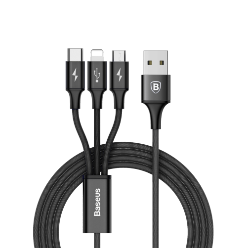

Información a través de la red
En este primer tema veremos lo que es una red de ordenadores, c√≥mo se estructuran y sobretodo, c√≥mo funciona Internet üëâ la red de redes.
üî† ¬øQue aprenderemos aqu√≠?
Seremos capaces de diferenciar los distintos tipos de redes que existen en el mundo de la informática, cómo y para qué se utilizan, cómo están montadas estas redes a nivel de infraestructura y las más importantes en el día a día en el mundo laboral.

üîó 1.1 Tipos de redes informáticas
Existen diversos tipos de redes informáticas a lo largo y ancho del planeta, cada una de ellas con distintas características en función de las necesidades de las personas y los datos o archivos digitales.
ü•ñ Redes PAN (Personal Area Network)
Las redes PAN o redes de área personal son las redes más básicas que existen para comunicar entre sí 2 dispositivos diferentes.
De esta manera, podemos intercambiar datos entre 2 aparatos de una manera fácil y rápida pero ¿cómo se conectan estos dispositivos?

Por cable
A lo largo de la historia se han ido creando diferentes tipos de cables con distintas conexiones, cables con tasas de transferencia de datos más rápidas que otras, mayor voltaje y demás características técnicas.
Como hemos visto anteriormente, estos cables hacen de puente entre un dispositivo y otro diferente, conectándose enter sí mediante protocolos de transferencia. Veamos un listado de tipos de cable para realizar esta conexión:
 |
 | |
|---|---|---|
| Ethernet | FireWire | USB |
{kind=link}
{kind=link}
Ethernet ~ año 1972
Este estándar de conexión es de los más antiguos que existen a la hora de transferir archivos entre computadoras.
Data del año 1972 creado por el ingeniero Robert Metcalfe en el Xerox Parc (Palo Alto, California) y las primeras conexiones se realizaban a través de un cable coaxial, totalmente diferente a lo que estamos acostumbrados a ver hoy en día.
{kind=link}
FireWire ~ año 1995
También conocido como IEEE1394 es un protocolo de transferencia de archivos de alta velocidad. Está disponible para varios dispositivos digitales como ordenadores, cámaras digitales o videocámaras.
Fue creado por Apple Computers en el año 1995 el cual lo incorporó en casi todos los modelos de ordenadores Apple llamados más comunmente Macintosh.

USB ~ año 1996
Sus siglas vienen del nombre completo Universal Serial Bus o como diríamos en castellano Bus Universal en Serie es un bus estándar que define los cables, conectores y protocolos de trasnferencia de archivos entre dispositivos.
Todo surgió de la idea de unificar y universalizar todas las conexiones de todos los dispositivos que existen y así tener una mayor estandarización en todos los aparatos electrónicos.
Creado en el año 1996 bajo la empresa Intel sustituyendo al Puerto serie, puerto paralelo, puerto de juegos(antiguos COM1 y COM2), Apple Desktop Bus y PS/2 (teclados y ratones).

Inalámbrica
Las redes inalámbricas son famosas por no necesitar de un cable físico para interconectar 2 dispositivos diferentes. A través de diferentes protocolos podemos establecer conexiones e intercambiar datos de una maquina a otra.
IrDA

Esta tecnología conocida como IrDA (Infrared Data Association) hace uso de los rayos infrarrojos para transferir datos entre 2 dispositivos diferentes a muy corta distancia (entre los 0,2 y 1 metro de distancia) y con un ángulo máximo de de 15°.
La velocidad máxima de transferencia oscila enter los 9600 bits/s hasta los 4Mbits/s.
Fue creada en el año 1993 por diferentes empresas de tales como HP, IBM, Sharp entre otros fabricantes.
Info
Esta tecnología venía preinstalada en ordenadores y teléfonos móviles NOKIA a finales de los años 90 y principios de los 2000. Más adelante, distintas marcas como Samsung y Motorola incorporaban estos dispositivos en sus terminales.
Bluetooth
{kind=link}
Wireless
- IrDA
- Bluetooth (Piconet)
- Wireless (Wi-Fi o Wireless Fidelity)
üì∂ Redes LAN (Local Area Network)
üè¢ Redes MAN (Metropolitan Area Network)
üö† Redes WAN (Wide Area Network)
üåé Redes GAN (Gloabal Area Network)
üîè Redes VPN (Virtual Private Network)
üîç 1.2 B√∫squeda a trav√©s de la red
EJERCICIOS
-
Realiza una búsqueda por Internet de los diferentes tipos de red de ordenadores que existen y escribe en un documento las propiedades más significativas de cada una de ellas, incluyendo cuándo se creó y quién la creo. El documento debe recoger las siguientes redes:
- LAN
- MAN
- PAN
- VPN
- WAN
-
Te han pedido que conectes 4 ordenadores entre sí, mediante cable, para poder intercambiar archivos y carpetas con el mismo sistema operativo. Ten en cuenta que ninguno de los 4 ordenadres DEBE SALIR A INTERNET. Elabora un documento PDF con un esquema que contenga todos los elementos necesarios (tanto físicos como protocolos) para realizar dicha tarea y una breve descripción de lo que tendrías que hacer a nivel infraestructural. Puedes utilizar canva para hacer el esquema. A este archivo PDF llámalo Ejercicio-1-2.pdf y envíalo.
-
Haz lo mismo que en el ejercicio anterior pero creando una red SIN CABLES, utilizando el protocolo WI-FI y esta vez SI QUE DEBEN PODER SALIR A INTERNET.